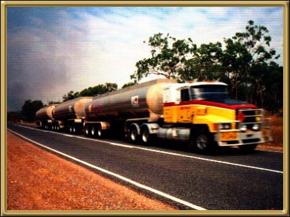

Photographer: Unknown
Road Trains are a very common sight on the Stuart Highway through the territory. They generally travel at fairly high speed and don't stop for anything. Once when driving down to Melbourne from Alice we saw very bright lights on the horizon - too bright for truck lights.. as we got closer we saw it was indeed a road train - much like the one above - and it was on fire! Fortunately the driver had moved the cab away from the tankers (full of jet fuel) and, as none of the extinguishers were working, all we could do was stand there with him, in the cold of a desert night and watch the truck as it exploded - one diesel tank after the other! All the while praying the cab was far enough away from the tankers! Fortunately it was. Unfortunately for the driver he lost everything. But it was a sight I will never forget.